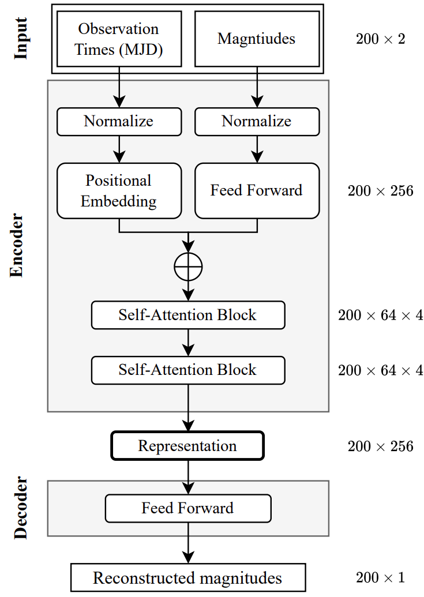

We introduce ASTROMER, a transformer-based model that creates light curve representations, trained on millions of R-band light sequences to adjust its weights. With those representations, our model creates embeddings to be used to train other models with ease, supporting downstream tasks such as Classification and Regression.
For further user implementation, we developed a Python library for the model, its methods, and trained weights, all available on our GitHub repository.
The increasing volume of new data and the new telescope technologies present a new challenge for researchers and their methods of studying variable objects, where traditional Machine Learning (ML) methods start to get overwhelmed, especially when it comes to dealing with millions of unlabeled data, like the vast majority of data available in surveys like MACHO or ATLAS.
To overcome these challenges, we took inspiration from the bidirectional transformers that have performed well in natural language processing, mostly using the self-attention block and Positional Encoding (PE) because both methods are effective in capturing relationships between observations to encode light curves.
We base our model on the Bidirectional Encoder Representations from Transformers (BERT) presented by a team of Google in 2019, which allows us to create representations from unlabeled data, pre-train the weights of those observations, and also be finetuned with just one additional output layer.
The main objective we propose is using learned representations embeddings of object variability to help train downstream models on small datasets for other researchers. To achieve this ASTROMER was pre-trained in a self-supervised manner which codifies observations into attention vectors.
The embeddings capture enough information of the light curves to reconstruct magnitudes using only the surrounding local context of the hidden observations transforming the light curves into embeddings via learnable parameters.
ASTROMER uses a feed-forward network (FNN) without hidden layers that transform each magnitude to a vector of size 256, maintaining the light curves observation fixed, avoiding the variation of the difference of stars and survey goals.
As we said before, the observation remains fixed, and to do that, we use Masking and Padding for each observation window. Then, ASTROMER passes the combined input sequences on the two self-attention blocks that capture similarities between observations and output the attention-based embeddings.
We initiate the forward pass of the encoder by transforming input times and magnitudes to a 256 vector that mixes temporal and brightness information. More specifically we use two self-attention blocks with four heads of sixtyfour neurons each.
“The final representation is the normalized concatenation of the heads of the last block. Then, the resulting embedding is a collection of 200 vectors of size 256, describing the attention of every observation to each other.” (C. Donoso-Oliva et al., 2022)

Currently, our team is improving ASTROMER, reaching better efficiency and smooth implementation by the users. In order to make embeddings more informative, we will explore adding new tasks during the pre-training and fine-tuning steps.
If you want to go deeper into how we implement our model, please take a look at our publication.